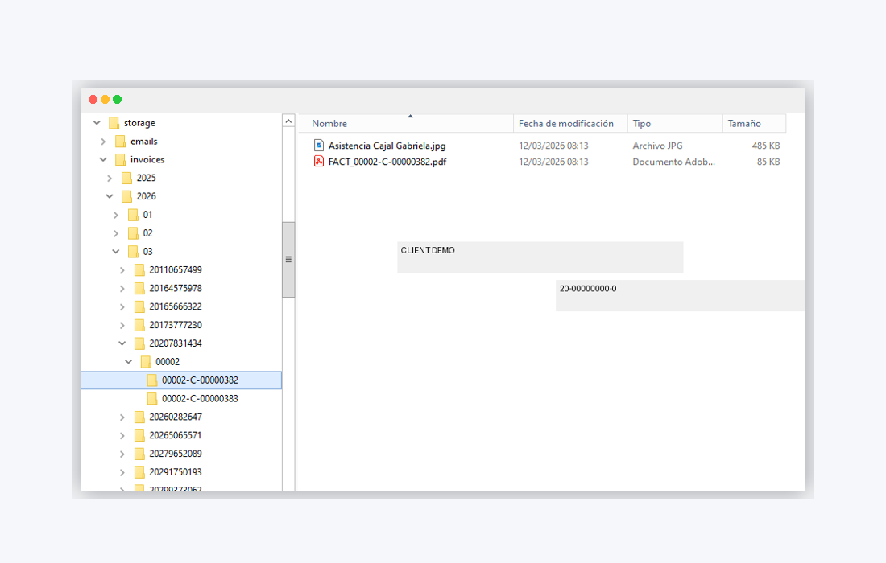
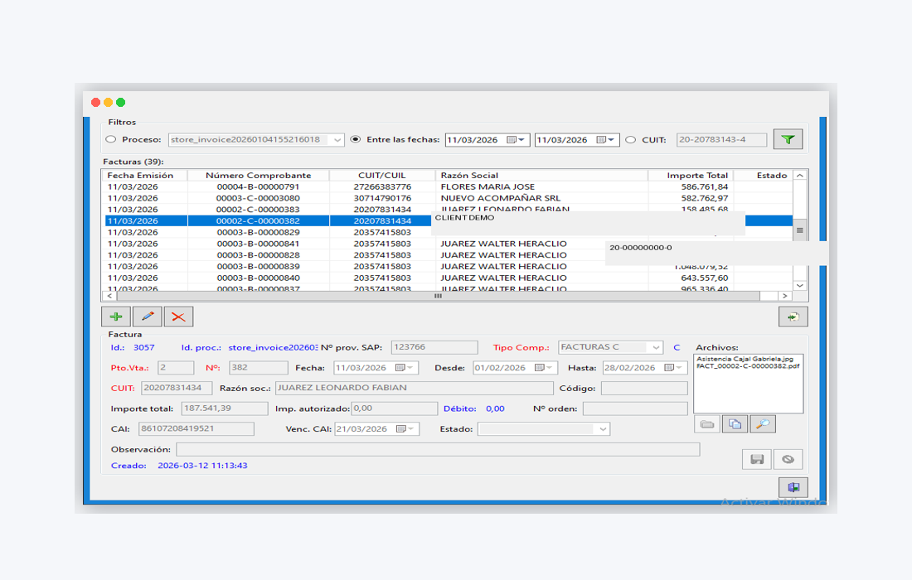

This project was designed to automate the intake and control of supplier invoice emails, reducing repetitive manual work and improving consistency across administrative processes. It combines email monitoring, attachment handling, PDF data extraction, business-rule validation, structured storage, and invoice registration into one operational workflow.
Featured Workflow Case Study
Invoice Intake & Validation Automation
Automated processing workflow for invoice emails, PDF data extraction, validation, structured archiving, and operational invoice registration.
Project Overview
Project Overview
The resulting workflow centralizes operational visibility while preserving traceability, making it easier to review documents, validate imported fields, and support follow-up tasks with normalized data and file structures.
Business Challenge
Business Challenge
In many administrative environments, invoice emails arrive with multiple attachments, inconsistent file naming, and PDF formats that require manual review. Key fields such as invoice type, date, supplier tax ID, invoice number, and total amount often need to be identified, validated, and stored correctly before any downstream processing can begin.
Solution Workflow
Solution Workflow
The solution monitors incoming invoice emails, records email and attachment metadata in SQLite, downloads related files, analyzes PDF invoices using pattern-based extraction, validates mandatory fields, stores files in a normalized folder structure, and creates operational invoice records for follow-up and review.
Email Intake
Monitor incoming messages
Attachment Capture
Store related files
PDF Extraction
Read key invoice fields
Validation
Check required data
Structured Archive
Normalize file storage
Invoice Register
Create operational records

Key Capabilities
Key Capabilities
Email monitoring and attachment intake
SQLite registration of emails and attachments
PDF invoice data extraction using regex-based rules
Validation of mandatory invoice fields
Standardized file renaming and archival structure
Invoice registration in operational tables
Supplier data enrichment from master records
Query interfaces for review, retrieval, and CSV export
Data & Control Layer
Data & Control Layer
The workflow stores email and attachment records separately, keeps invoice registration independent for better control, and enriches invoice records using supplier master data such as SAP number and legal name. This structure supports traceability, operational review, and later integration with reporting or business systems.

Operator Interfaces
Operator Interfaces
Two operator-facing interfaces support daily use. One allows users to review email and attachment records and retrieve stored files. The second provides invoice-level access, including imported data review, PDF viewing, controlled updates, related-file retrieval, and CSV export for operational analysis.
Email & Attachments Review
Centralized review of captured emails, downloaded files, attachment metadata, and stored-document retrieval for daily control tasks.
Invoice Review & Export
Invoice-level workspace for reviewing extracted data, opening related PDFs, applying controlled updates, and exporting operational datasets to CSV.

Business Value
Business Value
- Reduces repetitive manual intake work
- Improves consistency in invoice control processes
- Standardizes file organization and naming
- Supports operational traceability and review
- Creates a foundation for scalable administrative automation
Technologies
Technologies
Next Step
Looking to automate your invoice processing workflow?
Let’s discuss how this type of solution can reduce manual work, improve control, and support more reliable administrative operations.